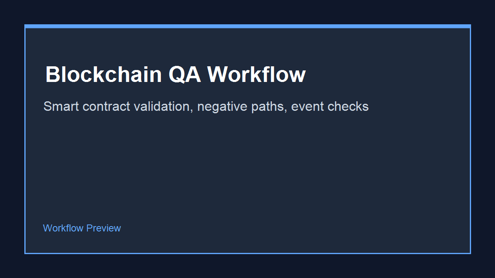
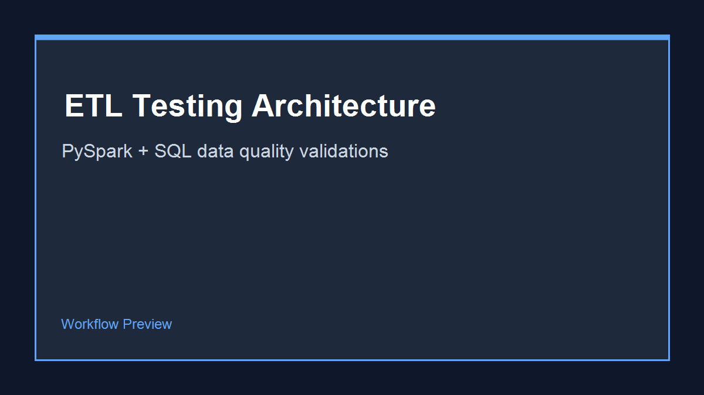
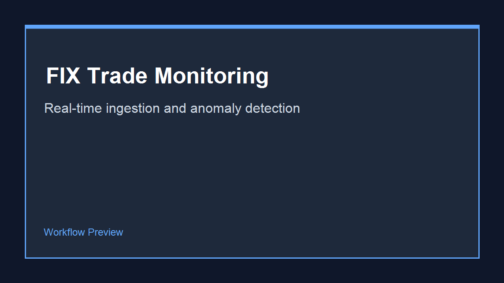
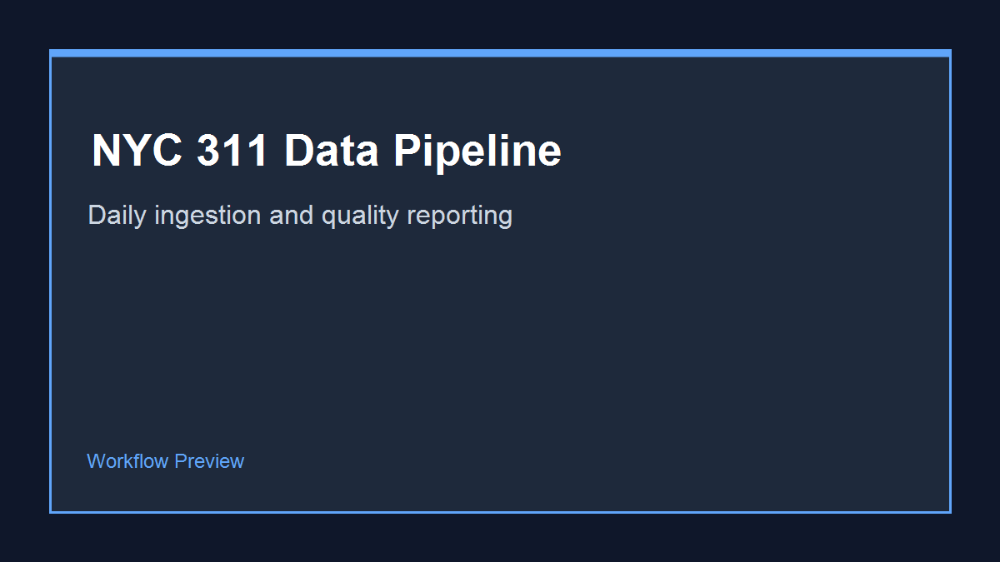
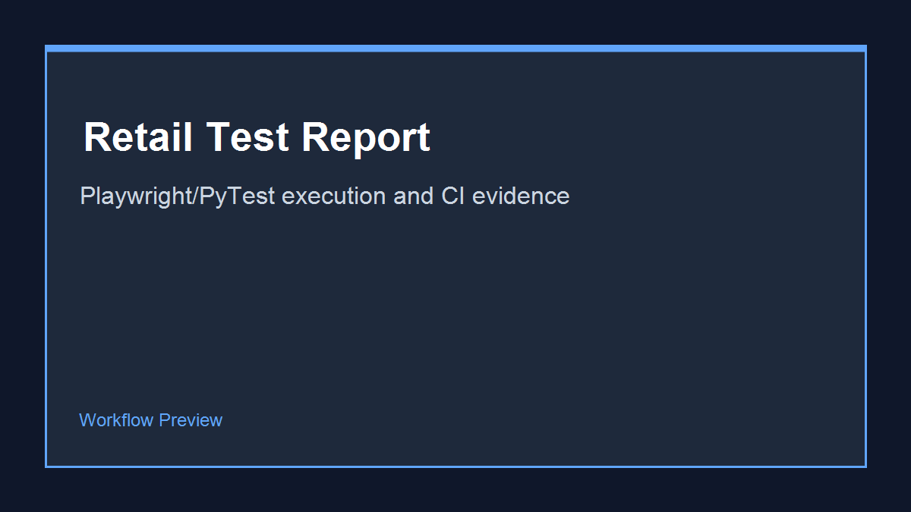

QA AUTOMATION • DATA ENGINEERING • FINTECH
I help teams ship with confidence by building scalable test automation, API/data quality checks, and CI gates that reduce release risk in FinTech and regulated environments.
Open to Senior QA Automation, SDET, and QA/Data hybrid roles.
0
Years in QA / FinTech
0
Automation Coverage Increase
0
UAT Defect Reduction
0
Daily Data Feeds Supported
I’m a Senior QA Automation and Data Engineer with 10+ years of experience across FinTech, media, and regulated environments. I specialize in Playwright, PyTest, Selenium, API testing, SQL, Airflow, CI/CD, and cloud-based test/data reliability.
Selenium WebDriver, Playwright, PyTest, Rest Assured, Cucumber BDD
Python, Java, JavaScript, SQL, Bash, C#
Agile/Scrum, BDD, TDD, Defect Lifecycle, UAT, Regression Testing
JIRA, Azure DevOps, Git, Jenkins, Postman, SQL Server
Functional, Integration, Smoke, Sanity, API, Data Validation
GitHub Actions, Azure Pipelines, Jenkins workflows, automated test execution
SQL Server, BigQuery, Airflow, Kafka, dbt, data quality checks
Sprint planning, standups, retrospectives, stakeholder communication
A delivery approach tuned for high-risk releases, CI/CD reliability, and data quality confidence.
I prioritize high-risk workflows first, then layer smoke, regression, API, and data checks by release impact.
I build reliable tests for Azure DevOps and GitHub Actions with clear pass/fail evidence for fast decisions.
I combine UI, API, SQL, and data validation to catch defects that UI-only automation typically misses.
Targeted QA automation and data engineering projects aligned with senior SDET and FinTech roles.

Ethereum contract validation framework with transaction lifecycle, negative-path, and event-log coverage.

Data pipeline test harness validating transformation logic, schema contracts, and data quality thresholds.

Trade event ingestion and quality monitoring workflow for latency-sensitive financial message streams.

Automated public-data ingestion with validation checks and a daily summary report for anomalies.

UI regression and performance checks for key user journeys with CI-ready HTML test reporting.
Industry-recognized credentials validating QA, automation, and delivery expertise.
ASTQB / ISTQB
Credential ID: CTFL-US-2024-1027
View credentialGoogle Cloud
Let’s connect about QA automation, data engineering, and FinTech platform quality. I usually reply within 24 hours.